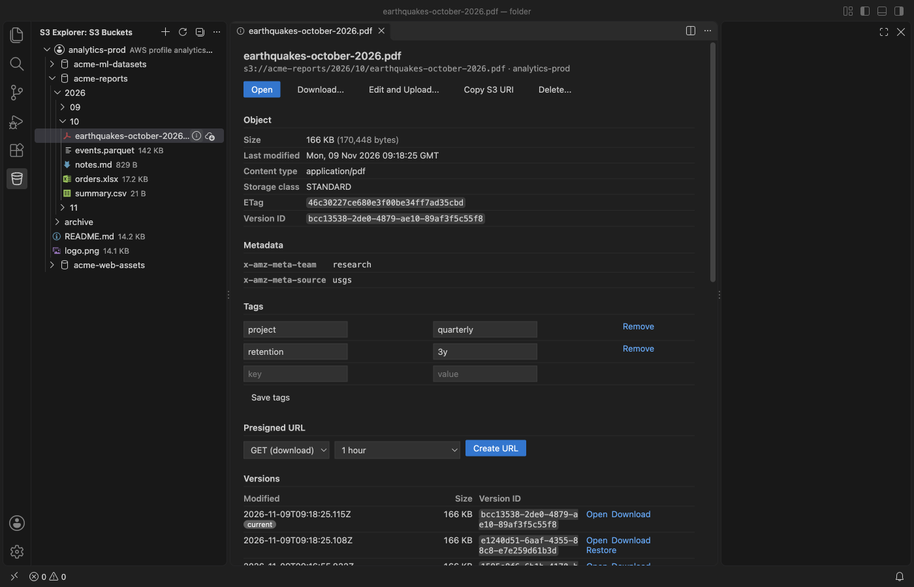

Open files in VS Code and Cursor / Developer files
See how much storage an S3 folder or bucket uses
S3 has no real folders, only key prefixes, so the size of a folder means listing every object under the prefix and adding up the sizes. The Size and Cost Report in S3 Explorer does that for a bucket or a folder and shows the total size, the object count, the size of each subfolder and storage class, the 20 largest objects and an estimate of the monthly storage cost. It is a Zovo Pro tool (USD 19 once) with 3 free tries.
Free, MIT license. Extension ID zovo.zovo-s3-explorer, version 0.1.1. Needs VS Code 1.90.0 or newer.

Steps in VS Code
- Install S3 Explorer from the Marketplace, or press Ctrl+P (Cmd+P on macOS) and run
ext install zovo.zovo-s3-explorer. - Add a connection in the S3 Buckets view and expand it to the bucket.
- Right-click the bucket or a folder and pick "Size and Cost Report (Pro)". You can also click Size and Cost Report in the Zovo Pro tools row and pick the connection, bucket and prefix.
- The report opens in a tab and fills in while the keys are listed, 1,000 per request. Closing the tab stops the listing.
- Read the totals at the top, then the tables By folder, By storage class and Largest objects. By folder groups the keys by the first folder below the one you picked, biggest first.
- For a cost estimate on MinIO or another service, or with your own price, set
s3Explorer.pricePerGBMonthin USD per GB-month.
Where Zovo Pro saves time
Browsing buckets with millions of keys, opening objects, Edit and Upload, upload and download with resumable multipart uploads, copy, move, rename and delete inside one connection, tags, versions, presigned URLs and folder sync with a dry-run plan are free, with no sign-in and no telemetry. The tree shows the size of each object next to its name.
Adding up sizes by hand stops working after a few hundred keys, and a script needs credentials and code. The Size and Cost Report lists the whole prefix and groups it for you, so you can see which folder or storage class holds the data. The other Pro tools copy objects between two connections, for example from AWS S3 to Cloudflare R2, and repeat a folder sync on a schedule.
With Size and Cost Report (Zovo Pro)
- Right-click a bucket or folder and pick "Size and Cost Report (Pro)".
- A try counts only when the listing has finished. Closing the tab early or an error uses none.
Size and Cost Report works 3 times on your computer before it asks for a license, and a try counts only when you get a result. Opening a file shows no popup and no countdown.
Zovo Pro costs USD 19 once. It is not a subscription, and it turns on the Pro tools in every Zovo extension, not only S3 Explorer. After a card payment (Stripe) your license key shows on the next page. In VS Code, run "Zovo Pro: Enter Zovo Pro license key" from the Command Palette and paste it. The key is checked on your computer, with no network call. With GitHub Sponsors, pick the "$19 one time" tier, then run "Zovo Pro: I already paid: unlock with GitHub Sponsors" and sign in with the same GitHub account. With PayPal, send USD 19 with "Zovo Pro" in the note and the key comes by email within a day.
A team of 5: USD 59 once, by card or by PayPal. Every rule and every Pro tool is on the Zovo Pro page.
Steps in Cursor, Windsurf or VSCodium
- Open the Extensions view with Ctrl+Shift+X (Cmd+Shift+X on macOS).
- Search for
zovo.zovo-s3-explorerand click Install. Cursor, Windsurf and VSCodium install from Open VSX, where it is published aszovo/zovo-s3-explorer. - If your editor has no gallery, download the .vsix from the Open VSX page and run "Extensions: Install from VSIX...".
- Then use it the same way as in VS Code.
What S3 Explorer handles
- AWS S3, Cloudflare R2, MinIO, Backblaze B2, Wasabi and DigitalOcean Spaces.
- A whole bucket or any folder (prefix) in it.
- Storage classes as S3 reports them, such as STANDARD, STANDARD_IA and GLACIER.
- Buckets with millions of objects, with a running count while the listing goes on.
What it does not do
- The cost is one estimate for the whole report, at one price per GB-month. It covers storage only, not requests, transfer or minimum storage durations.
- For AWS the default price is the S3 Standard list price (USD 0.023 per GB-month), also for objects in other storage classes. Set your own price when most data is in Glacier or Infrequent Access.
- Only current objects are counted. Old versions in a versioned bucket and unfinished multipart uploads are not.
- Every key is listed, 1,000 per request, so a bucket with 10 million objects takes 10,000 list requests.
- The By folder table shows at most 200 folders, and Largest objects shows 20.
Other options
- AWS CLI.
aws s3 lswith its recursive and summarize options prints the object count and total size of a prefix. Free, needs the AWS CLI. - AWS S3 console. Select a folder, open Actions and pick Calculate total size. AWS only, one selection at a time.
Install counts and Open VSX status were checked on 13 November 2026. Descriptions in quotes are the extensions' own.
Questions
Why does the cost show n/a?
MinIO and other self-hosted services have no list price. Set s3Explorer.pricePerGBMonth to your price per GB-month and run the report again.
Does the report include old versions?
No. It counts the current objects that a normal listing returns. Noncurrent versions and unfinished multipart uploads are not included.
Can I stop a long listing?
Yes. Close the report tab and the listing stops. A report that did not finish does not use a free try.
Does it work in Cursor or Windsurf?
Yes. Cursor, Windsurf and VSCodium install extensions from Open VSX. Search for the extension in their Extensions view and install it there.
More about S3 Explorer
Read the S3 Explorer page for every feature and setting, or the source code on GitHub.
Related guides
- Browse AWS S3, Cloudflare R2 or MinIO buckets in VS Code
- Copy objects from AWS S3 to Cloudflare R2 or MinIO
- Create a presigned URL for an S3, R2 or MinIO object
- Read a HAR file offline in VS Code
Zovo Pro and support
Zovo Pro: USD 19 once, every Zovo viewer. It turns on the Pro tools in this extension and in the other Zovo extensions you use. The free features stay free.
After a card payment your license key shows on the next page. Paste it with the command "Zovo Pro: Enter a key".
You can also support the work with no Pro:
Need your format supported?
Open a format request with a sample file, and I reply there whether it can be done. For USD 299 once, through this GitHub Sponsors tier, I add your file format or a missing feature to this extension, with tests, within 7 days.